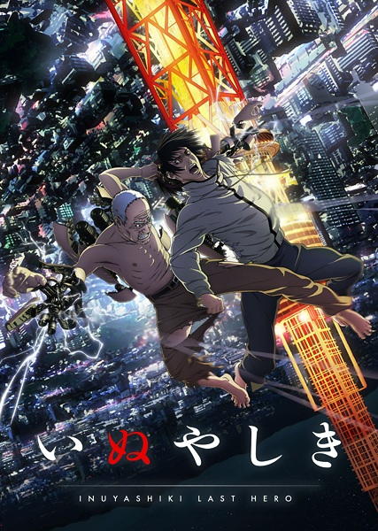
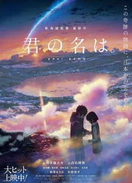
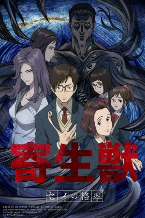
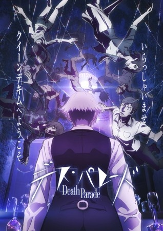
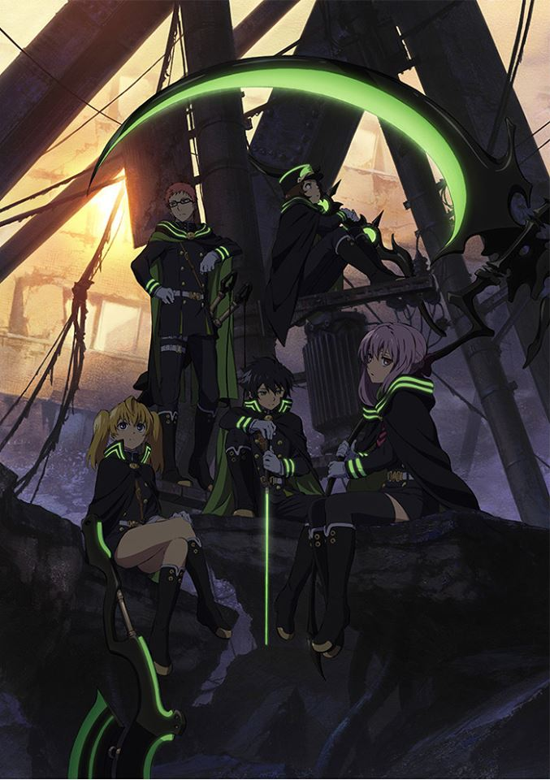
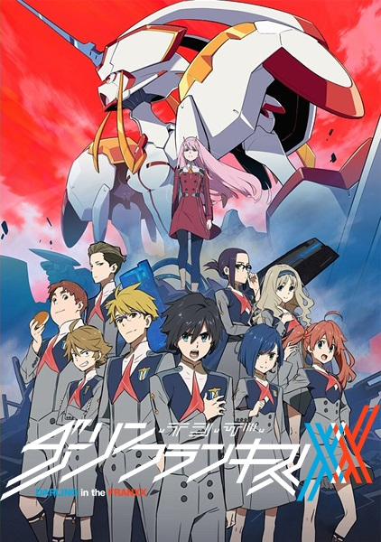
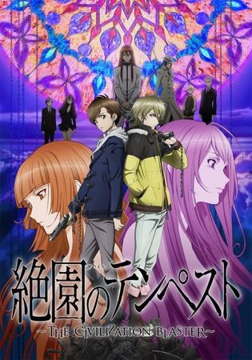

Inuyashiki: The Last Hero (11 episodes)

Ichirou Inuyashiki is a 58-year-old family man who is going through a difficult time in his life. Though his frequent back problems are painful, nothing hurts quite as much as the indifference and distaste that his wife and children have for him. Despite this, Ichirou still manages to find solace in Hanako, an abandoned Shiba Inu that he adopts into his home. However, his life takes a turn for the worse when a follow - up physical examination reveals that Ichirou has stomach cancer and only three months to live; though he tries to be strong, his family's disinterest causes an emotional breakdown. Running off into a nearby field, Ichirou embraces his dog and weeps - until he notices a strange figure standing before him.
Suddenly, a bright light appears and Ichirou is enveloped by smoke and dust. When he comes to, he discovers something is amiss - he has been reborn as a mechanized weapon wearing the skin of his former self. Though initially shocked, the compassionate Ichirou immediately uses his newfound powers to save a life, an act of kindness that fills him with happiness and newfound hope.
However, the origins of these strange powers remain unclear. Who was the mysterious figure at the site of the explosion, and are they as kind as Ichirou when it comes to using this dangerous gift?
Kimi no Na wa (1 episode)

Mitsuha Miyamizu, a high school girl, yearns to live the life of a boy in the bustling city of Tokyo - a dream that stands in stark contrast to her present life in the countryside. Meanwhile in the city, Taki Tachibana lives a busy life as a high school student while juggling his part-time job and hopes for a future in architecture.
One day, Mitsuha awakens in a room that is not her own and suddenly finds herself living the dream life in Tokyo — but in Taki's body! Elsewhere, Taki finds himself living Mitsuha's life in the humble countryside. In pursuit of an answer to this strange phenomenon, they begin to search for one another.
Kimi no Na wa. revolves around Mitsuha and Taki's actions, which begin to have a dramatic impact on each other's lives, weaving them into a fabric held together by fate and circumstance.
Shigatsu wa Kimi no Uso (22 episodes)

Music accompanies the path of the human metronome, the prodigious pianist Kousei Arima. But after the passing of his mother, Saki Arima, Kousei falls into a downward spiral, rendering him unable to hear the sound of his own piano.
Two years later, Kousei still avoids the piano, leaving behind his admirers and rivals, and lives a colorless life alongside his friends Tsubaki Sawabe and Ryouta Watari. However, everything changes when he meets a beautiful violinist, Kaori Miyazono, who stirs up his world and sets him on a journey to face music again.
Based on the manga series of the same name, Shigatsu wa Kimi no Uso approaches the story of Kousei's recovery as he discovers that music is more than playing each note perfectly, and a single melody can bring in the fresh spring air of April.
Kiseijuu: Sei no Kakuritsu (24 episodes)

All of a sudden, they arrived: parasitic aliens that descended upon Earth and quickly infiltrated humanity by burrowing into the brains of vulnerable targets. These insatiable beings acquire full control of their host and are able to morph into a variety of forms in order to feed on unsuspecting prey.
Sixteen-year-old high school student Shinichi Izumi falls victim to one of these parasites, but it fails to take over his brain, ending up in his right hand instead. Unable to relocate, the parasite, now named Migi, has no choice but to rely on Shinichi in order to stay alive. Thus, the pair is forced into an uneasy coexistence and must defend themselves from hostile parasites that hope to eradicate this new threat to their species.
Death Parade (12 episodes)

After death, there is no heaven or hell, only a bar that stands between reincarnation and oblivion. There the attendant will, one after another, challenge pairs of the recently deceased to a random game in which their fate of either ascending into reincarnation or falling into the void will be wagered. Whether it's bowling, darts, air hockey, or anything in between, each person's true nature will be revealed in a ghastly parade of death and memories, dancing to the whims of the bar's master. Welcome to Quindecim, where Decim, arbiter of the afterlife, awaits!
Death Parade expands upon the original one-shot intended to train young animators. It follows yet more people receiving judgment - until a strange, black-haired guest causes Decim to begin questioning his own rulings.
Owari no Seraph (12 episodes)

With the appearance of a mysterious virus that kills everyone above the age of 13, mankind becomes enslaved by previously hidden, power-hungry vampires who emerge in order to subjugate society with the promise of protecting the survivors, in exchange for donations of their blood.
Among these survivors are Yuuichirou and Mikaela Hyakuya, two young boys who are taken captive from an orphanage, along with other children whom they consider family. Discontent with being treated like livestock under the vampires' cruel reign, Mikaela hatches a rebellious escape plan that is ultimately doomed to fail. The only survivor to come out on the other side is Yuuichirou, who is found by the Moon Demon Company, a military unit dedicated to exterminating the vampires in Japan.
Many years later, now a member of the Japanese Imperial Demon Army, Yuuichirou is determined to take revenge on the creatures that slaughtered his family, but at what cost?
Owari no Seraph is a post-apocalyptic supernatural shounen anime that follows a young man's search for retribution, all the while battling for friendship and loyalty against seemingly impossible odds.
Darling in the FranXX (24 episodes)

In the distant future, humanity has been driven to near-extinction by giant beasts known as Klaxosaurs, forcing the surviving humans to take refuge in massive fortress cities called Plantations. Children raised here are trained to pilot giant mechas known as FranXX—the only weapons known to be effective against the Klaxosaurs—in boy-girl pairs. Bred for the sole purpose of piloting these machines, these children know nothing of the outside world and are only able to prove their existence by defending their race.
Hiro, an aspiring FranXX pilot, has lost his motivation and self-confidence after failing an aptitude test. Skipping out on his class' graduation ceremony, Hiro retreats to a forest lake, where he encounters a mysterious girl with two horns growing out of her head. She introduces herself by her codename Zero Two, which is known to belong to an infamous FranXX pilot known as the "Partner Killer." Before Hiro can digest the encounter, the Plantation is rocked by a sudden Klaxosaur attack. Zero Two engages the creature in her FranXX, but it is heavily damaged in the skirmish and crashes near Hiro. Finding her partner dead, Zero Two invites Hiro to pilot the mecha with her, and the duo easily defeats the Klaxosaur in the ensuing fight. With a new partner by his side, Hiro has been given a chance at redemption for his past failures, but at what cost?
Zetsuen no Tempest (24 episodes)

Yoshino Takigawa, an ordinary teenager, is secretly dating his best friend Mahiro's younger sister. But when his girlfriend Aika mysteriously dies, Mahiro disappears, vowing to find the one responsible and make them pay for murdering his beloved sister. Yoshino continues his life as usual and has not heard from Mahiro in a month - until he is confronted by a strange girl who holds him at gunpoint, and his best friend arrives in the nick of time to save him.
Yoshino learns that Mahiro has enlisted the help of a witch named Hakaze Kusaribe to find Aika's killer and of the existence of an entity known as the "Tree of Exodus." The witch's brother selfishly desires to make use of its power, in spite of the impending peril to the world. However, Hakaze is banished to a deserted island, and it is now up to Yoshino and Mahiro to help her save the world, while inching ever closer to the truth behind Aika's death.